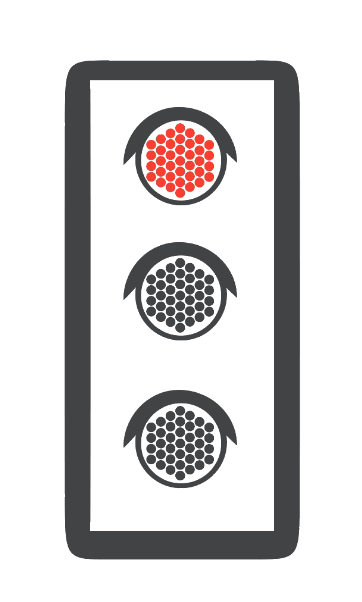

You are losing the race against Delhi's traffic
By Gurman Bhatia, Soumya Pillai and Abhinash Kumar Jha
15th December, 2016
Delhites spend nearly four hours on the road in peak hours every day. They spent less than half this time in 2012.
"Race vehicles" on different routes with this interactive and see how the driving time has changed.
Lead Illustration: Anand Katakam
Note: The data is sourced from a research by six Bhopal-based urban designers and road engineers. The research takes into account commute between 5pm and 7pm over the past five years.
Related stories

India’s air pollution in five charts